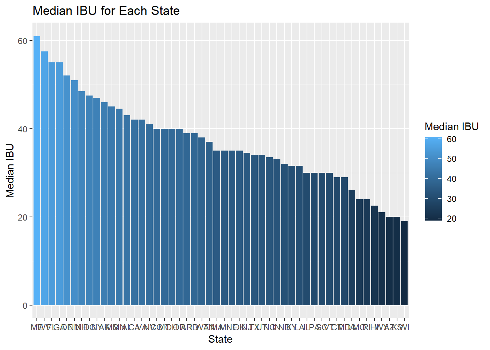
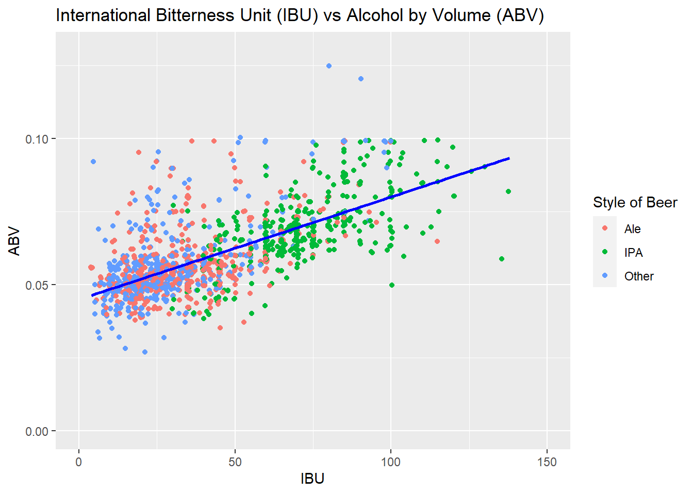

#read in the datasets
library(readr)
beer = read_csv("C:\\Users\\Hudson\\OneDrive\\Documents\\Josh - Masters\\Doing Data Science - MSDS_6306\\Case Study 1\\Beers.csv")## Rows: 2410 Columns: 7## -- Column specification -------------------------------------------------------
## Delimiter: ","
## chr (2): Name, Style
## dbl (5): Beer_ID, ABV, IBU, Brewery_id, Ounces##
## i Use `spec()` to retrieve the full column specification for this data.
## i Specify the column types or set `show_col_types = FALSE` to quiet this message.brew = read_csv("C:\\Users\\Hudson\\OneDrive\\Documents\\Josh - Masters\\Doing Data Science - MSDS_6306\\Case Study 1\\Breweries.csv")## Rows: 558 Columns: 4## -- Column specification -------------------------------------------------------
## Delimiter: ","
## chr (3): Name, City, State
## dbl (1): Brew_ID##
## i Use `spec()` to retrieve the full column specification for this data.
## i Specify the column types or set `show_col_types = FALSE` to quiet this message.ab_brew = read_csv("C:\\Users\\Hudson\\OneDrive\\Documents\\Josh - Masters\\Doing Data Science - MSDS_6306\\Case Study 1\\AB_Breweries.csv")## Rows: 13 Columns: 6## -- Column specification -------------------------------------------------------
## Delimiter: ","
## chr (4): Brewery, abb, City, State
## dbl (2): Brew_ID, Opening Date##
## i Use `spec()` to retrieve the full column specification for this data.
## i Specify the column types or set `show_col_types = FALSE` to quiet this message.ab_beer = read_csv("C:\\Users\\Hudson\\OneDrive\\Documents\\Josh - Masters\\Doing Data Science - MSDS_6306\\Case Study 1\\AB_Beers1.csv")## New names:
## * `` -> ...5
## * `` -> ...6
## * `` -> ...7
## * `` -> ...8## Rows: 27 Columns: 8## -- Column specification -------------------------------------------------------
## Delimiter: ","
## chr (3): Beer Name, Style, ABV
## dbl (1): IBU
## lgl (4): ...5, ...6, ...7, ...8##
## i Use `spec()` to retrieve the full column specification for this data.
## i Specify the column types or set `show_col_types = FALSE` to quiet this message.consume = read_csv("C:\\Users\\Hudson\\OneDrive\\Documents\\Josh - Masters\\Doing Data Science - MSDS_6306\\Case Study 1\\Beer_Consumption_By_State.csv")## New names:
## * `` -> ...6## Rows: 51 Columns: 6## -- Column specification -------------------------------------------------------
## Delimiter: ","
## chr (2): State, abb
## dbl (2): Rank, Gallons_Per_Capita
## lgl (1): ...6##
## i Use `spec()` to retrieve the full column specification for this data.
## i Specify the column types or set `show_col_types = FALSE` to quiet this message.#load the needed libraries
library(ggplot2)
library(GGally)
library(magrittr)
library(dplyr)
library(tidyverse)
library(usmap)
library(maps)
library(mapproj)
library(fiftystater)
library("car")
library(class)
library(caret)
library(e1071)
library(tidyverse)
library(ggExtra)Analysis Questions: 1.How many breweries are present in each state?
#1.How many breweries are present in each state?
st_count = brew %>% group_by(State) %>% summarize(Count =n_distinct(Brew_ID))
st_count## # A tibble: 51 x 2
## State Count
## <chr> <int>
## 1 AK 7
## 2 AL 3
## 3 AR 2
## 4 AZ 11
## 5 CA 39
## 6 CO 47
## 7 CT 8
## 8 DC 1
## 9 DE 2
## 10 FL 15
## # ... with 41 more rowswrite_excel_csv(st_count, file = "num_brew " )
colnames(st_count)[1] = "abb" #rename state to abb for future merge
lookup = data.frame(abb = state.abb, State = state.name) #load in state names and state abbreviations to a dataframe for future merge
st_count = merge(st_count,lookup,"abb") #make a single data set with state names and abbreviations
st_count$region <- tolower(st_count$State) #make all state names lowercase for future merge
st_count = st_count[-1]
#states = map_data("state")
colnames(fifty_states)[6] = "region"
st_count = merge(fifty_states, st_count, by = "region", all.x = T) #merge the dateframes to include regions
st_count = st_count[order(st_count$order),] #order the dataframe to paint a proper map
st_count %>% ggplot(aes(x = fifty_states$long, y = fifty_states$lat, group = group)) + geom_polygon(aes(fill = Count)) + geom_path() + scale_fill_gradientn(colors = hcl.colors(10, "RdYlGn", rev = TRUE), na.value = "grey90")+ggtitle("Number of Breweries in Each State") + xlab("Latitude") + ylab("Longitude") + coord_quickmap()#plot the heatmapAnswer: Simply run the code and review “st_count” tibble for answer to Question 1
Supplemental question Which states consume the most beer?
# #the following Beer consumption data was found on the following article: https://vinepair.com/articles/map-states-drink-beer-america-2020/#:~:text=THE%20STATES%20THAT%20DRINK%20THE%20MOST%20BEER%20OVERALL,and%20New%20York%20trailing%20behind.%20Ranking%20The%20States
con_count = consume %>% group_by(abb) %>% summarize(Gallons = Gallons_Overall)
write_excel_csv(con_count, file = "consume" )
#colnames(con_count)[1] = "abb" #rename state to abb for future merge
lookup = data.frame(abb = state.abb, State = state.name) #load in state names and state abbreviations to a dataframe for future merge Count
con_count = merge(con_count,lookup,"abb") #make a single data set with state names and abbreviations
con_count$region <- tolower(con_count$State) #make all state names lowercase for future merge
con_count = con_count[-1]
#states = map_data("state")
colnames(fifty_states)[6] = "region"
con_count = merge(fifty_states, con_count, by = "region", all.x = T) #merge the dateframes to include regions
con_count = con_count[order(con_count$order),] #order the dataframe to paint a proper map
con_count %>% ggplot(aes(x = fifty_states$long, y = fifty_states$lat, group = group)) + geom_polygon(aes(fill = Gallons)) + geom_path() + scale_fill_gradientn(colors = hcl.colors(10, "RdYlGn", rev = TRUE), na.value = "grey90") + ggtitle("2018 Beer Consumption per State") + xlab("Latitude") + ylab("Longitude") + coord_quickmap()#plot the heatmap2. Merge beer data with the breweries data. Print the first 6 observations and the last six observations to check the merged file. (RMD only, this does not need to be included in the presentation or the deck.)
colnames(beer)[5] = "Brew_ID" #rename brewery ID in Beers data to match Breweries data's brewery ID for future merge
colnames(beer)[1] = "Beer Name" #delineates between beer name and brewery names
colnames(brew)[2] = "Brewery Name"
bb = merge(beer, brew, by = "Brew_ID", all.x = T) #make the merge
head(bb) #1st six observations## Brew_ID Beer Name Beer_ID ABV IBU Style
## 1 1 Get Together 2692 0.045 50 American IPA
## 2 1 Maggie's Leap 2691 0.049 26 Milk / Sweet Stout
## 3 1 Wall's End 2690 0.048 19 English Brown Ale
## 4 1 Pumpion 2689 0.060 38 Pumpkin Ale
## 5 1 Stronghold 2688 0.060 25 American Porter
## 6 1 Parapet ESB 2687 0.056 47 Extra Special / Strong Bitter (ESB)
## Ounces Brewery Name City State
## 1 16 NorthGate Brewing Minneapolis MN
## 2 16 NorthGate Brewing Minneapolis MN
## 3 16 NorthGate Brewing Minneapolis MN
## 4 16 NorthGate Brewing Minneapolis MN
## 5 16 NorthGate Brewing Minneapolis MN
## 6 16 NorthGate Brewing Minneapolis MNtail(bb) #last six observations## Brew_ID Beer Name Beer_ID ABV IBU
## 2405 556 Pilsner Ukiah 98 0.055 NA
## 2406 557 Heinnieweisse Weissebier 52 0.049 NA
## 2407 557 Snapperhead IPA 51 0.068 NA
## 2408 557 Moo Thunder Stout 50 0.049 NA
## 2409 557 Porkslap Pale Ale 49 0.043 NA
## 2410 558 Urban Wilderness Pale Ale 30 0.049 NA
## Style Ounces Brewery Name
## 2405 German Pilsener 12 Ukiah Brewing Company
## 2406 Hefeweizen 12 Butternuts Beer and Ale
## 2407 American IPA 12 Butternuts Beer and Ale
## 2408 Milk / Sweet Stout 12 Butternuts Beer and Ale
## 2409 American Pale Ale (APA) 12 Butternuts Beer and Ale
## 2410 English Pale Ale 12 Sleeping Lady Brewing Company
## City State
## 2405 Ukiah CA
## 2406 Garrattsville NY
## 2407 Garrattsville NY
## 2408 Garrattsville NY
## 2409 Garrattsville NY
## 2410 Anchorage AKAnswer: Simply run the code and see data.frames “head(bb)” and “tail(bb)” for answer to Question 2.
bb_clean = na.omit(bb) #%>% filter(!is.na(ABV) & !is.na(IBU) & !is.na(Style))Answer: Simply run the code and see data.frame bb_clean for answer to question 3
#get the median values for each state
abv = bb_clean %>% group_by(State) %>% summarise(median(ABV))
ibu = bb_clean %>% group_by(State) %>% summarise(median(IBU))
#make a data frame from the median values
meds = merge(abv, ibu, by = "State")
print(meds)## State median(ABV) median(IBU)
## 1 AK 0.0570 46.0
## 2 AL 0.0600 43.0
## 3 AR 0.0400 39.0
## 4 AZ 0.0550 20.0
## 5 CA 0.0580 42.0
## 6 CO 0.0650 40.0
## 7 CT 0.0610 29.0
## 8 DC 0.0590 47.5
## 9 DE 0.0550 52.0
## 10 FL 0.0620 55.0
## 11 GA 0.0620 55.0
## 12 HI 0.0520 22.5
## 13 IA 0.0560 26.0
## 14 ID 0.0580 39.0
## 15 IL 0.0570 30.0
## 16 IN 0.0570 33.0
## 17 KS 0.0500 20.0
## 18 KY 0.0575 31.5
## 19 LA 0.0510 31.5
## 20 MA 0.0540 35.0
## 21 MD 0.0565 29.0
## 22 ME 0.0670 61.0
## 23 MI 0.0560 35.0
## 24 MN 0.0555 44.5
## 25 MO 0.0500 24.0
## 26 MS 0.0580 45.0
## 27 MT 0.0570 40.0
## 28 NC 0.0610 33.5
## 29 ND 0.0500 32.0
## 30 NE 0.0560 35.0
## 31 NH 0.0465 48.5
## 32 NJ 0.0460 34.5
## 33 NM 0.0610 51.0
## 34 NV 0.0550 41.0
## 35 NY 0.0595 47.0
## 36 OH 0.0575 40.0
## 37 OK 0.0630 35.0
## 38 OR 0.0560 40.0
## 39 PA 0.0570 30.0
## 40 RI 0.0525 24.0
## 41 SC 0.0500 30.0
## 42 TN 0.0550 37.0
## 43 TX 0.0550 34.0
## 44 UT 0.0400 34.0
## 45 VA 0.0570 42.0
## 46 VT 0.0550 30.0
## 47 WA 0.0560 38.0
## 48 WI 0.0510 19.0
## 49 WV 0.0620 57.5
## 50 WY 0.0510 21.0#order the states by median values
am = meds[order(meds$`median(ABV)`),]
im = meds[order(meds$`median(IBU)`),]
#Barplot for median ABV for each state
am %>% ggplot(aes(x = reorder(State, -`median(ABV)`), y = `median(ABV)`, fill = `median(ABV)`)) + geom_col() + ggtitle("Median ABV for Each State") + xlab("State") + ylab("Median ABV") + labs(fill = "Median ABV")#ready US map plot for ABV for each state
colnames(am)[1] = "abb"
am = merge(am ,lookup,"abb") #make a single data set with state names and abbreviations
am $region <- tolower(am $State) #make all state names lowercase for future merge
am = am [-1]
colnames(fifty_states)[6] = "region"
am = merge(fifty_states, am, by = "region", all.x = T) #merge the dateframes to include regions
am = am[order(am$order),] #order the dataframe to paint a proper map
#heatmap for the median ABV for each state
am %>% ggplot(aes(x = fifty_states$long, y = fifty_states$lat, group = group)) + geom_polygon(aes(fill = `median(ABV)`)) + geom_path() + scale_fill_gradientn(colors = hcl.colors(10, "RdYlGn", rev = TRUE), na.value = "grey90")+ggtitle("Median ABV for Each State") + xlab("Latitude") + ylab("Longitude") + coord_quickmap()#Barplot for median IBU for each state
im %>% ggplot(aes(x = reorder(State, -`median(IBU)`), y = `median(IBU)`, fill = `median(IBU)`)) + geom_col() + ggtitle("Median IBU for Each State") + xlab("State") + ylab("Median IBU") + labs(fill = "Median IBU")
#ready US map plot for median IBU for each state
colnames(im)[1] = "abb"
im = merge(im ,lookup,"abb") #make a single data set with state names and abbreviations
im $region <- tolower(im $State) #make all state names lowercase for future merge
im = im [-1]
colnames(fifty_states)[6] = "region"
im = merge(fifty_states, im, by = "region", all.x = T) #merge the dateframes to include regions
im = im[order(im$order),] #order the dataframe to paint a proper map
#heatmap for the median IBU for each state
im %>% ggplot(aes(x = fifty_states$long, y = fifty_states$lat, group = group)) + geom_polygon(aes(fill = `median(IBU)`)) + geom_path() + scale_fill_gradientn(colors = hcl.colors(10, "RdYlGn", rev = TRUE), na.value = "grey90")+ggtitle("Median IBU for Each State") + xlab("Latitude") + ylab("Longitude") + coord_quickmap()Answer: Simply run the code and review the bar graphs and heat maps for answers to question 4.
#order the states by median values
abv_max = bb_clean %>% group_by(State) %>% summarise(max(ABV))
abv_max = abv_max[order(-abv_max$`max(ABV)`),]
abv_max[1,]## # A tibble: 1 x 2
## State `max(ABV)`
## <chr> <dbl>
## 1 KY 0.125ibu_max = bb_clean %>% group_by(State) %>% summarise(max(IBU))
ibu_max = ibu_max[order(-ibu_max$`max(IBU)`),]
ibu_max[1,]## # A tibble: 1 x 2
## State `max(IBU)`
## <chr> <dbl>
## 1 OR 138Answer: Kentucky has the maximum ABV beer. Oregon has the maximum IBU beer.
summary(bb_clean$ABV)## Min. 1st Qu. Median Mean 3rd Qu. Max.
## 0.02700 0.05000 0.05700 0.05992 0.06800 0.12500bb_clean %>% ggplot(mapping = aes(x = ABV, fill = "red" )) + geom_histogram() + ggtitle("ABV Value Distribution") + xlab("ABV Value") + ylab("Count of ABV Value")## `stat_bin()` using `bins = 30`. Pick better value with `binwidth`.shapiro.test(bb_clean$ABV)##
## Shapiro-Wilk normality test
##
## data: bb_clean$ABV
## W = 0.93663, p-value < 2.2e-16qqPlot(bb_clean$ABV)## [1] 8 57Answer: The ABV values does not closely follow a normal distribution. In fact, it is slightly skewed right with a mean of 0.060 and median of 0.057. This implies that there are other variables that are influencing the ABV values for beers across the country. This information begs to be further analyzed to find relationships that ABV values could have with other variables.
#assign categories for
abv_cat = bb_clean %>% mutate(ABV_Category = cut(ABV, breaks = c(0,0.5000,0.05700, 0.06800, 0.12600), labels = c("Low","Medium", "High", "Very High")))
#summary(bb_clean$IBU)
abv_ibu_cat = abv_cat %>% mutate(IBU_Category = cut(IBU, breaks = c(0,21,35, 64, 139), labels = c("Low","Medium", "High", "Very High")))
p = abv_ibu_cat %>% ggplot(mapping = aes(x = IBU, y = ABV)) + geom_point(position = "jitter", color = "red") + geom_smooth(method = "lm", se = FALSE, color = "blue") + ggtitle("International Bitterness Unit (IBU) vs Alcohol by Volume (ABV)") + xlim(0,150) + ylim(0,0.130)
ggMarginal(p, type="histogram", fill = "red")## `geom_smooth()` using formula 'y ~ x'
## `geom_smooth()` using formula 'y ~ x'
## `geom_smooth()` using formula 'y ~ x'#test relationships between the IBU and ABV variables
relate_test <- cor.test(abv_ibu_cat$IBU, abv_ibu_cat$ABV, method = "spearman")## Warning in cor.test.default(abv_ibu_cat$IBU, abv_ibu_cat$ABV, method =
## "spearman"): Cannot compute exact p-value with ties##########################################################
###Because the p-value of the test is 2.2e-16, which is less than the significance level alpha = 0.05. We can conclude that IBU and ABV are significantly correlated with a correlation coefficient of 0.6707224 and p-value of 2.2e-16.
##########################################################
#abv_ibu_cat %>% select(IBU, ABV, ABV_Category, IBU_Category) %>% ggpairs(aes(color = IBU_Category))Answer: Because the p-value of the test is 2.2e-16, which is less than the significance level alpha = 0.05. We can conclude that IBU and ABV are significantly correlated with a correlation coefficient of 0.6707224 and p-value of 2.2e-16.
In addition, while you have decided to use KNN to investigate this relationship (KNN is required) you may also feel free to supplement your response to this question with any other methods or techniques you have learned. Creativity and alternative solutions are always encouraged.
bb_clean = na.omit(bb)#reset bb_clean
IPAorALE = ""
#populate IPAorALE column
for(i in 1:length(bb_clean$Style)){
if(grepl("IPA", bb_clean$Style[i], fixed = TRUE) == "TRUE"){
bb_clean$IPAorALE[i] = "IPA"} else if(grepl("Ale", bb_clean$Style[i], fixed = TRUE) == "TRUE"){
bb_clean$IPAorALE[i] = "Ale"} else {
bb_clean$IPAorALE[i] = "Other"}
}
bb_clean = bb_clean %>% relocate(IPAorALE, .after = Style) #relocate the style classification next to Style
IvA = bb_clean %>% filter(IPAorALE != "Other") #build a dataframe for just IPAs and Ales only
abv_ttest = t.test(ABV ~ IPAorALE, IvA)#run ttest to show differences in ABV means between IPAs and Ales
abv_ttest##
## Welch Two Sample t-test
##
## data: ABV by IPAorALE
## t = -16.23, df = 794.65, p-value < 2.2e-16
## alternative hypothesis: true difference in means between group Ale and group IPA is not equal to 0
## 95 percent confidence interval:
## -0.01410901 -0.01106438
## sample estimates:
## mean in group Ale mean in group IPA
## 0.05655616 0.06914286IBU_ttest = t.test(IBU ~ IPAorALE, IvA)#run ttest to show differences in IBU means between IPAs and Ales
IBU_ttest##
## Welch Two Sample t-test
##
## data: IBU by IPAorALE
## t = -30.118, df = 797.55, p-value < 2.2e-16
## alternative hypothesis: true difference in means between group Ale and group IPA is not equal to 0
## 95 percent confidence interval:
## -40.06727 -35.16402
## sample estimates:
## mean in group Ale mean in group IPA
## 34.33333 71.94898#plot the non-Anheuser-Busch beers IBU v ABV and delineate the beer style (IPA or Ale)
bb_clean %>% ggplot(mapping = aes(x = IBU, y = ABV, color = IPAorALE)) + geom_point(position = "jitter") + geom_smooth(method = "lm", se = FALSE, color = "blue") + ggtitle("International Bitterness Unit (IBU) vs Alcohol by Volume (ABV)") +scale_color_discrete("Style of Beer") + xlim(0,150) + ylim(0,0.130)## `geom_smooth()` using formula 'y ~ x'
#plot the Anheuser-Busch beers IBU v ABV and delineate the beer style (IPA or Ale)
ab_beer = na.omit(ab_beer)
ab_beer %>% ggplot(mapping = aes(x = IBU, y = ABV, color = Style)) + geom_point(position = "jitter") + ggtitle("International Bitterness Unit (IBU) vs Alcohol by Volume (ABV)") +scale_color_discrete("Style of Beer") + xlim(0,150) + ylim(0,0.130)#set up knn
set.seed(6) #set the seed
splitperc = .70 #training the model with 70% of the data and testing the models accuracy with 30% of the data
#setting up the knn training data
train_i = sample(1:length(bb_clean$IPAorALE), round(splitperc*length(bb_clean$IPAorALE)))
train = bb_clean[train_i, ]
test = bb_clean[-train_i, ]
class = knn(train[, c(4,5)], test[, c(4,5)], train$IPAorALE, prob = TRUE, k = 5)
table(class, test$IPAorALE)##
## class Ale IPA Other
## Ale 93 20 59
## IPA 14 95 5
## Other 45 7 83confusionMatrix(table(class, test$IPAorALE))## Confusion Matrix and Statistics
##
##
## class Ale IPA Other
## Ale 93 20 59
## IPA 14 95 5
## Other 45 7 83
##
## Overall Statistics
##
## Accuracy : 0.6437
## 95% CI : (0.5959, 0.6895)
## No Information Rate : 0.361
## P-Value [Acc > NIR] : <2e-16
##
## Kappa : 0.4618
##
## Mcnemar's Test P-Value : 0.3509
##
## Statistics by Class:
##
## Class: Ale Class: IPA Class: Other
## Sensitivity 0.6118 0.7787 0.5646
## Specificity 0.7063 0.9365 0.8102
## Pos Pred Value 0.5407 0.8333 0.6148
## Neg Pred Value 0.7631 0.9121 0.7762
## Prevalence 0.3610 0.2898 0.3492
## Detection Rate 0.2209 0.2257 0.1971
## Detection Prevalence 0.4086 0.2708 0.3207
## Balanced Accuracy 0.6591 0.8576 0.6874#head(meds)
demand = ""
model = data.frame(meds, demand)
#head(model)
#use best knn k-value to classify each state to predict the style of beer that could be in highest demand based on ABV and IBU
for(i in 1:length(meds$State))
{
try = knn(train[,c(4,5)], meds[i, c(2,3)], train$IPAorALE, prob = TRUE, k = 5)
model[i , 4] = try[1]
if(model[i , 4] == "1"){
model[i , 5] = "Ale"} else if(model[i , 4] == "2"){
model[i , 5] = "IPA"} else if(model[i , 4] == "3"){
model[i , 5] = "Other"}
}
#This model predicts what style of beer each state most demands.
Style_Demand = as.numeric(model$demand)
model = data.frame(model, Style_Demand)abb = model$State
model = data.frame(model, abb)
predict_count = model %>% group_by(abb) %>% summarize(Demand = Style_Demand)
write_excel_csv(predict_count, file = "model" )
#colnames(predict_count)[1] = "abb" #rename state to abb for future merge
lookup = data.frame(abb = state.abb, State = state.name) #load in state names and state abbreviations to a dataframe for future merge Count
predict_count = merge(predict_count,lookup,"abb") #make a single data set with state names and abbreviations
predict_count$region <- tolower(predict_count$State) #make all state names lowercase for future merge
predict_count = predict_count[-1]
#states = map_data("state")
colnames(fifty_states)[6] = "region"
predict_count = merge(fifty_states, predict_count, by = "region", all.x = T) #merge the dateframes to include regions
predict_count = predict_count[order(predict_count$order),] #order the dataframe to paint a proper map
#cols = c("Ale" = "red", "IPA" = "blue", "Other" = "darkgreen")
predict_count %>% ggplot(aes(x = fifty_states$long, y = fifty_states$lat, group = group)) + geom_polygon(aes(fill = Demand)) + geom_path() + scale_fill_gradientn(colors = c( "indianred1","limegreen", "cornflowerblue"), na.value = "grey90")+ggtitle("In-Demand Style") + xlab("Latitude") + ylab("Longitude") + coord_quickmap()Answer: Using machine learning model, (KNN), we can predict which style of beer is in most demand for each state. Couple this with the consumption rate data, there could be opportunity to capitalize on understanding both sets of demand.